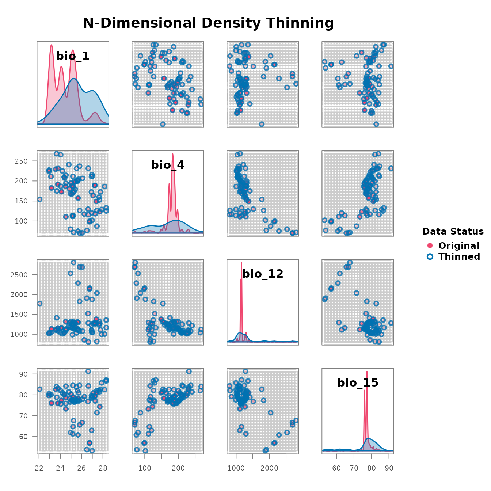

library(bean)
data(origin_dat_prepared, package = "bean")
env_vars <- c("bio_1", "bio_4", "bio_12", "bio_15")Choosing an objective grid resolution
find_env_resolution() selects a kernel-density
bandwidth for each environmental variable. The bandwidth is the
scale at which the empirical density of observations becomes smooth, and
is a statistically defensible choice for the edge length of an
environmental grid cell. The default selector is the Sheather–Jones
plug-in estimator (Sheather & Jones, 1991); Silverman’s rule
("silverman") and Scott’s rule ("scott") are
also available.
res <- find_env_resolution(
data = origin_dat_prepared,
env_vars = env_vars,
method = "sheather-jones"
)
res
#> --- Bean environmental grid resolution ---
#> Bandwidth selector: sheather-jones
#>
#> variable resolution
#> bio_1 0.08274934
#> bio_4 0.85162273
#> bio_12 2.25907105
#> bio_15 0.07070831Visualise the per-variable kernel density and the chosen bandwidth:
plot(res)
Stochastic thinning
thin_env_nd() randomly retains exactly one occurrence
per occupied grid cell. A seed makes the selection
reproducible without disturbing the global random state.
thinned_stochastic <- thin_env_nd(
data = origin_dat_prepared,
env_vars = env_vars,
grid_resolution = res$suggested_resolution,
seed = 1
)
thinned_stochastic
#> --- Bean Stochastic Thinning Results ---
#>
#> Thinned 1024 original points to 78 points.
#> This represents a retention of 7.6% of the data.
#>
#> --------------------------------------Deterministic thinning
thin_env_center() replaces each occupied cell with a
single point at the geometric centre of the cell. There is no
randomness, so the result is exactly reproducible.
thinned_deterministic <- thin_env_center(
data = origin_dat_prepared,
env_vars = env_vars,
grid_resolution = res$suggested_resolution
)
thinned_deterministic
#> --- Bean Deterministic Thinning Results ---
#>
#> Thinned 1024 original points to 78 unique grid cell centers.
#> This represents a retention of 7.6% of the data.
#>
#> --------------------------------------Comparing original and thinned data
plot_bean() overlays the thinned points on the original
cloud in a scatterplot matrix.
plot_bean(
original_data = origin_dat_prepared,
thinned_object = thinned_stochastic,
env_vars = env_vars
)